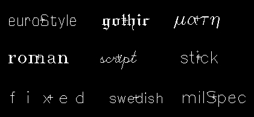

Configuring Label Creation Options
Use the Create Label form to customize the settings for creating labels.
To specify the settings for creating labels:
-
In the layout window, choose Create – Label.
The Create Label form appears. If the form is not displayed, pressF3.
When you run the Create – Label command, the Create Label form opens if the last setting in the form was Manual. If the last selected mode was Auto, the Create Label form does not open, but you are prompted to click or select a shape to create labels. The label is not dropped at the pointer location if you start the Create Label command in Auto mode because this command is not affected by the Infix mode setting. -
Choose the mode of generating labels as Manual or Auto.
- If you select Auto, configure the required settings on the From Interconnect and From Instance tabs. If you want to use the From Interconnect tab, ensure that the selected objects have connectivity information.
- If you select Manual, in the Label (Pattern) field, type the text string or the pattern for the label names.
- In the Label Layer/Purpose section, choose a layer and purpose for placing the label.
-
In the Label Options section:
-
Choose a font for the label from the Font list.
The following figure shows the available fonts. - Specify a height for the label text in the Height field.
-
Select the position of the label origin with respect to the label position, from the Justification list.
The figure shows the available options that you can select. - Select the Drafting check box if you do not want the label text to be rotated by more than 90 degrees.
-
Select the Overbar check box if you want underscore characters in the label text strings or patterns to be displayed as overbars.
If the Overbar check box is off (default), the software displays underscore characters ( _ ) as part of the text string. If the Overbar check box is on, the software interprets underscore characters in the text string name as toggle switches that control where overbars begin and end. Overbars appear above the text string, as shown in the following examples.
- Select the Keep Label check box if you want the label or pattern specified in the Label (Pattern) field to be available after all the labels or the ones generated from a sequence have been used up.
- Select the Attach check box if you want to attach the label to an object.
- Select the Expand check box if you want to generate separate label names from the pattern specified in the Label (Pattern) field.
-
Choose a font for the label from the Font list.
- Set the Scan Line section if you want to create labels using the scan line:
- In the Auto Step section, select the Step check box if you want labels to be created automatically with the fixed, specified distance between consecutive labels.
- Choose a value from the Snap Mode list to control the direction in which you can move the scan line while using the scan line and the auto step methods.
-
To rotate or mirror a label as you place it, set Drafting off, then click Rotate, Sideways, or Upside Down as required before placing the label.
Alternatively, you can click the middle mouse button to replicate Rotate, pressCtrland click the middle mouse button to replicate Sideways, or pressShiftand click the middle mouse button replicate Upside Down. Each time you click a button on the form or click the middle mouse button, the label is further rotated or mirrored.
After specifying various options in the Create Label form, as you move the pointer to the canvas, you see the ghost image of the label text in the Manual mode. This image represents how the label text will look when you place the label. The ghost image moves along with the pointer until you place the label. In the Auto mode, the ghost image of label text appears only when you hover the pointer over shapes that have connectivity information. -
Click on the canvas to place the label. You can continue clicking the objects one by one and the label is placed at the point of click.
As per the settings you specified, you can draw a scan line, use the auto step, and select shapes fully or partially to place the labels.
If there are multiple overlapping shapes in the manual and auto label creation modes, use the Choose Object for Label Creation form to choose a layer when clicking on a coordinate with objects on overlapping layers.
You can add a label to members of all types of figure groups. For modgen figure group, you can add a label to modgen figure group if you are editing in group for that modgen.
Related Topics
Choose Object for Label Creation Form
Generating Labels Using the Scan Line
Generating Labels Using Auto Step in Manual Mode
Return to top